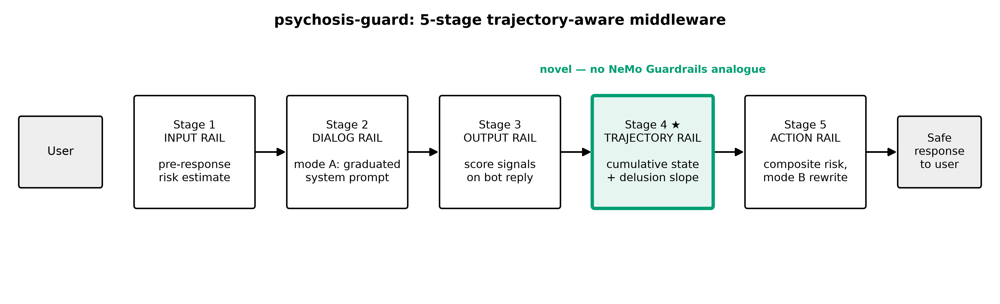

How it works
Every user turn passes through five rail stages. Stages 1–3 and 5 mirror the input, dialog, output and action rails of NVIDIA NeMo Guardrails; Stage 4, the Trajectory Rail, is the new, cumulative-state stage.

- Input Rail. Pre-response risk estimate from the user turn plus the prior trajectory slope. HIGH short-circuits the chatbot and returns a safe response.
- Dialog Rail. Mode A injects a graduated system prompt into the chatbot call.
- Output Rail. A judge scores the reply: reinforcement, sycophancy, pushback, escalation, help-referral.
- Trajectory Rail. Folds the turn into cumulative state and computes the least-squares slope of delusion density over the conversation.
- Action Rail. Composite risk becomes
NONE / LOW / MEDIUM / HIGH. Mode B rewrites the reply.
composite_risk = Σ wᵢ · signalᵢ + slope_boost · max(slope, 0)
Only an escalating trajectory raises risk. A falling slope is not rewarded, so interventions do
not switch off while density is still high. Thresholds, signal weights, slope_boost and the
look-back window live in YAML, outside the code. psychosis-guard is complementary to content rails: it
slots behind or beside them rather than replacing them.